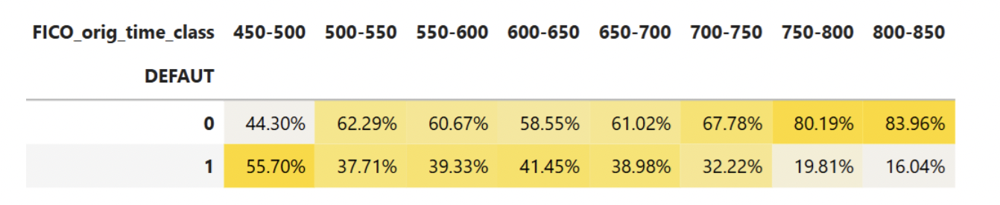
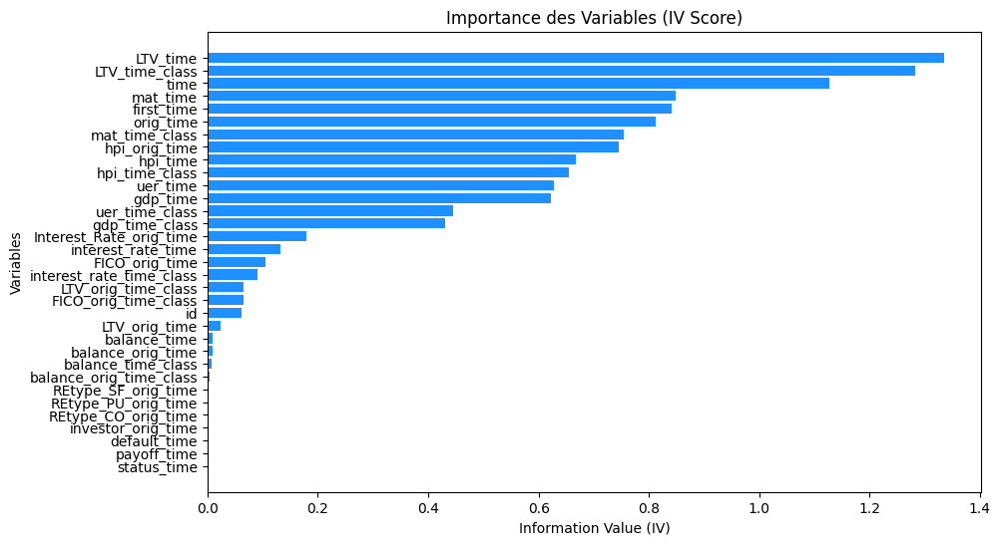

La gestion efficace des risques de crédit constitue un pilier essentiel pour toute institution bancaire, particulièrement dans un contexte où les pertes liées aux défauts de paiement excèdent largement les bénéfices générés par les emprunteurs solvables. Pour la banque ISF, il est donc crucial de disposer d’une grille de notation fiable permettant d’évaluer les risques de défaut de ses clients, afin de sécuriser ses engagements financiers et d’optimiser l’allocation de son capital. Une telle approche vise non seulement à minimiser les pertes potentielles, mais également à répondre aux exigences réglementaires en matière de gestion des risques, tout en assurant une prise de décision éclairée pour un portefeuille de prêts significatif.
Dans ce cadre, l’objectif de ce projet est de concevoir une grille de probabilité de défaut (PD) robuste pour la banque ISF, spécifiquement adaptée à un portefeuille de prêts hypothécaires. Cette initiative s’inscrit dans une démarche stratégique d’évaluation et de gestion des risques, avec trois ambitions principales : noter les emprunteurs, estimer les pertes attendues, et évaluer le capital économique et réglementaire nécessaire pour couvrir les pertes inattendues. Pour mener à bien cette mission, nous exploitons une base de données riche, issue des portefeuilles de titres adossés à des créances hypothécaires (RMBS) fournis par International Financial Research. Cette base contient des informations détaillées sur 50 000 emprunteurs résidentiels américains, suivis sur 60 périodes, avec des variables clés telles que le solde restant, le ratio prêt-valeur (LTV), le type de propriété, les indicateurs macroéconomiques (comme le taux de chômage ou l’indice des prix immobiliers), ainsi que des indicateurs de défaut et de paiement anticipé.
Notre méthodologie s’articule en trois grandes étapes. En premier lieu, nous réaliserons une analyse exploratoire approfondie de la base de données afin d’identifier les facteurs les plus influents sur la probabilité de défaut. À travers des analyses bivariées et des études de corrélation, nous établirons un profil type des emprunteurs à risque. Ensuite, nous développerons et comparerons plusieurs modèles prédictifs pour attribuer une probabilité de défaut à chaque emprunteur, posant ainsi les bases d’une grille de PD précise et fiable. Enfin, nous estimerons les pertes attendues sur ce portefeuille en appliquant un Loss Given Default (LGD) homogène de 45 %, avant de calculer, à l’aide de la formule de Bâle, le capital requis et les actifs pondérés par le risque (RWA). Cette dernière étape permettra de garantir que la banque ISF est suffisamment capitalisée pour faire face aux risques inhérents à son portefeuille de prêts hypothécaires.
Ce rapport ambitionne ainsi de fournir à la banque ISF un outil décisionnel stratégique, renforçant sa capacité à gérer les risques de crédit tout en assurant sa conformité aux normes réglementaires et sa résilience face aux incertitudes économiques.
I. Base de données
La base mortgage est un panel de 50 000 emprunteurs suivis sur 60 périodes, contenant des données sur l’origine, la performance et l’évolution des prêts hypothécaires résidentiels aux États-Unis, permettant d’analyser le risque de défaut et l’impact des conditions économiques.
Nous allons commencer par explorer et nettoyer les données afin de mieux comprendre les informations disponibles.
a. Variables explicatives
Informations temporelles :
id : ID emprunteur
time : période d’observation
orig_time : dates d’émission
first_time : dates d’émission de première observation
mat_time : dates d’émission d’échéance
Données financières et économiques :
balance_time : Solde restant dû
LTV_time : Ratio prêt/valeur (%)
interest_rate_time : Taux d’intérêt (%)
hpi_time : Indice des prix immobiliers (base 100)
gdp_time : Croissance du PIB (%)
uer_time : Taux de chômage (%)
Caractéristiques du bien et de l’emprunteur:
REtype_CO_orig_time : Type de bien – Condominium (1 = oui, 0 = non)
REtype_PU_orig_time : Type de bien – Développement urbain planifié (1 = oui, 0 = non)
REtype_SF_orig_time : Type de bien – Maison individuelle (1 = oui, 0 = non)
Soit un total de 24 variables numériques et 10 variables catégorielles.
import pandas as pd
import numpy as np
import seaborn as sns
import matplotlib.pyplot as plt
from scipy import stats
from sklearn.preprocessing import KBinsDiscretizer
from sklearn.model_selection import train_test_split
from sklearn.linear_model import LogisticRegression
from sklearn.metrics import roc_auc_score, confusion_matrix, classification_report
import pandas as pd
import numpy as np
# Définir le chemin du fichier
file_path = r"C:\Users\kelia\Desktop\credit_risk\mortgage.csv"
# Charger le fichier CSV
df = pd.read_csv(file_path)
# Afficher les premières lignes
print(df.head())
print(df.columns)
b.Statistiques descriptives et nettoyage de la base de données
La base de données contient très peu de valeurs manquantes, avec seulement 270 occurrences pour la variable LTV_time, soit 0,043% des données. Étant donné cette faible proportion, la suppression de ces lignes n’aura qu’un impact négligeable sur nos résultats et peut donc être réalisée sans risque de biais significatif.
# Vérifier les valeurs manquantes
missing_values = df.isnull().sum()
missing_percent = (df.isnull().sum() / len(df)) * 100
# Affichage des variables ayant des valeurs manquantes
missing_data = pd.DataFrame({'Valeurs Manquantes': missing_values, 'Pourcentage': missing_percent})
print(missing_data[missing_data['Valeurs Manquantes'] > 0].sort_values(by='Pourcentage', ascending=False))
On a ensuite utilisé la méthode de discrétisation pour transformer des variables continues en variables catégorielles. L’avantage de la discrétisation est qu’elle permet de capturer des non-linéarités, d’améliorer l’interprétabilité et de réduire l’impact des valeurs extrêmes. Elle facilite l’analyse des effets des variables et rend les résultats plus compréhensibles, notamment en risque de crédit.
Voici les seuils définis pour chaque nouvelle variable classée :
Ces classes permettent une segmentation plus fine des variables pour une meilleure analyse des données.
Analyse de quelques variables :
Pour la variable investor_orig_time, on remarque que le nombre d’emprunteurs investisseurs est beaucoup plus faible que le nombre d’emprunteurs non investisseurs. On peut faire la même remarque pour les variables REtype_CO_orig_time et REtype_PU_orig_time.
time : La distribution en cloche indique que la majorité des observations sont concentrées autour de la 25ᵉ et de la 30ᵉ période. Cela reflète une augmentation du nombre de prêts suivie par une stabilisation ou un ralentissement de l’octroi des prêts.
orig_time : La concentration des prêts dans certaines périodes peut indiquer une hausse des demandes pendant ces périodes, due par exemple à une baisse des taux d’intérêt ou à des politiques favorables aux emprunteurs.
balance_time : L'asymétrie à droite montre que la majorité des prêts ont un solde faible, ce qui signifie que de nombreux emprunteurs sont avancés dans leur remboursement. Cependant, certains prêts ont encore un solde élevé, ce qui peut être dû à des prêts récents ou à des emprunteurs ayant opté pour de longues durées de remboursement.
LTV_time : Un pic marqué autour de 80 % est typique des prêts hypothécaires, car les banques préfèrent que les emprunteurs apportent au moins 20 % d’apport personnel. Certains prêts ont des ratios plus élevés, ce qui pourrait indiquer des emprunteurs bénéficiant de prêts à haut risque ou des politiques bancaires plus souples à certaines périodes.
FICO_orig_time : La majorité des emprunteurs ont un score compris entre 600 et 800, ce qui indique que la plupart des prêts ont été accordés à des profils ayant une bonne ou très bonne solvabilité. Très peu de prêts semblent être accordés à des emprunteurs ayant un score inférieur à 600, ce qui montre une sélection stricte des banques.
L’analyse des statistiques descriptives sur les variables numériques nous fait remarquer que certaines variables présentent des valeurs aberrantes susceptibles d’étirer les moyennes. Nous remplaçons alors ces valeurs par les valeurs moyennes obtenues par les individus présentant des caractéristiqurs similaires.
Analyse bivariée selon le risque de défaut
Distribution des défauts dans l’échantillon :
Pour débuter notre analyse afin de comprendre les relations entre la probabilité de défaut, et les différentes caractéristiques des clients, nous croisons l’analyse avec la variable Défaut. Cela va ainsi nous permettre de déterminer les modalités qui pourraient influencer la probabilité de faire défaut. En outre, cela va nous permettre de dégager un premier profil type de client faisant défaut. L'analyse de la variable cible 'DEFAUT' dans notre base de données, indique si un emprunteur a fait défaut (1) ou non (0). La répartition des valeurs pour cette variable est cruciale pour comprendre la dynamique du risque de crédit dans notre portefeuille de prêts hypothécaires. D'après les données extraites, 25,662 emprunteurs n'ont pas fait défaut, tandis que 14,219 emprunteurs ont été en défaut. Cela représente un ratio significatif de défauts, proche de 36%, ce qui souligne l'importance de développer des modèles de prédiction efficaces pour identifier les facteurs de risque associés à ces défauts.
print(df["DEFAUT"].value_counts())
import plotly.graph_objects as go
import plotly.io as pio
# Remplacer 0/1 par "yes"/"no" pour plus de clarté
df["DEFAUT_LABEL"] = df["DEFAUT"].apply(lambda x: 'yes' if x == 1 else 'no')
# Compter les occurrences
count_defaults = df["DEFAUT_LABEL"].value_counts()
# Création des barres
trace0 = go.Bar(
x=["Yes"], y=[count_defaults["yes"]],
name="Défauts", marker=dict(color='#FF6868', line=dict(color="#EF4040", width=2))
)
trace1 = go.Bar(
x=["No"], y=[count_defaults["no"]],
name="Non Défauts", marker=dict(color='#9ADE7B', line=dict(color="#65B741", width=2))
)
# Définition du layout
layout = go.Layout(
title="Répartition des défauts sur crédits",
title_x=0.5,
yaxis=dict(title="Total"),
xaxis=dict(title="Variable cible"),
plot_bgcolor='#F5F5F5',
paper_bgcolor='#F5F5F5'
)
# Création de la figure
fig = go.Figure(data=[trace0, trace1], layout=layout)
fig.update_yaxes(showgrid=True, gridwidth=.5, gridcolor='#C7C8CC')
# Afficher la figure
pio.show(fig)
variable numériques
Dans notre analyse bivariée des variables liées au risque de défaut, certaines tendances distinctes émergent. Comme le montre la distribution du solde restant dû (balance_time), il n'y a pas de différence marquée dans les montants dus entre les emprunteurs qui sont en défaut et ceux qui ne le sont pas, suggérant que le montant du prêt restant n'est pas un indicateur significatif de défaut.
En revanche, des différences plus prononcées apparaissent pour d'autres variables. Le graphique du ratio prêt-valeur (LTV_time) montre une distribution plus élevée pour les emprunteurs en défaut, indiquant que plus le ratio est élevé, plus le risque de défaut augmente. De même, le taux de chômage (uer_time) montre une divergence claire : les emprunteurs en défaut ont tendance à être dans des périodes de chômage plus élevé.
Les taux d'intérêt (interest_rate_time) et l'indice des prix immobiliers (hpi_time) révèlent également des informations pertinentes. Les emprunteurs en défaut ont généralement subi des taux d'intérêt plus élevés, et un indice des prix immobiliers plus bas, ce qui peut refléter une plus grande vulnérabilité économique ou une diminution de la valeur des garanties immobilisées. Ces observations suggèrent que le ratio prêt-valeur, le taux de chômage, le taux d'intérêt, et l'indice des prix immobiliers sont des variables potentiellement discriminantes et méritent une attention particulière pour affiner notre compréhension du risque de défaut.
Ces observations suggèrent que des variables comme le ratio prêt/valeur ou l’indicateur de chômage sont potentiellement plus discriminantes pour expliquer le risque de défaut. Nous allons donc examiner plus en détail la distribution de ces variables et d’autres facteurs susceptibles d’améliorer la performance de notre futur modèle.
import seaborn as sns
import matplotlib.pyplot as plt
num_vars = ["balance_time", "LTV_time", "interest_rate_time", "hpi_time", "gdp_time", "uer_time", "FICO_orig_time"]
fig, axes = plt.subplots(2, 4, figsize=(18, 10))
for i, col in enumerate(num_vars):
row, col_index = divmod(i, 4)
sns.boxplot(data=df_clean, x="DEFAUT", y=col, ax=axes[row, col_index], palette=["#9ADE7B", "#FF6868"])
axes[row, col_index].set_title(f"Distribution de {col}")
plt.tight_layout()
plt.show()
Distribution du ratio prêt/valeur %
Ce tableau et ce graphique ci-dessous montrent comment la probabilité de défaut évolue en fonction des différentes tranches du ratio Loan-to-Value (LTV). On remarque que plus le LTV est élevé, plus le risque de défaut augmente, suivant une tendance presque linéaire.
Lorsque le ratio LTV est inférieur à 70 %, la probabilité de défaut reste relativement faible, sous la barre des 24 %. Entre 70 % et 85 %, elle progresse nettement pour atteindre environ 24 %. Au-delà de 85 %, elle grimpe à 50 %, ce qui signifie qu’un emprunteur dans cette tranche a autant de chances de ne pas rembourser que de s’acquitter de sa dette. Pour ceux dont le LTV dépasse 100 %, la probabilité de défaut atteint 74 %, illustrant un risque particulièrement élevé lorsque le montant emprunté excède la valeur du bien financé.
Ces observations soulignent que le ratio Loan-to-Value est un indicateur clé du risque de crédit. En particulier, à partir de 85 %, le niveau de risque devient critique et nécessite une attention accrue.
#tableau
import pandas as pd
import seaborn as sns
# Définir les tranches de montants (bins) et leurs labels
bins = [0, 50000, 100000, 200000, 300000, 1000000]
labels = ['0-50K', '50K-100K', '100K-200K', '200K-300K', '+300K']
# Appliquer les tranches à la colonne 'balance_time'
df_clean['balance_time_class'] = pd.cut(df_clean['balance_time'], bins=bins, labels=labels, right=False)
# Calculer la probabilité de défaut par tranche
cm = sns.light_palette("gold", as_cmap=True)
balance_crosstab = pd.crosstab(df_clean['DEFAUT'], df_clean['balance_time_class']).apply(lambda x: x / x.sum() * 100, axis=0)
# Appliquer une mise en forme avec des couleurs
balance_crosstab = balance_crosstab.style.background_gradient(cmap=cm, axis=1).format('{:.2f}%')
balance_crosstab
#graphique1
import matplotlib.pyplot as plt
# Calculer les taux de défaut par tranche de balance_time
balance_default_rates = df_clean.groupby('balance_time_class')['DEFAUT'].mean() * 100
# Afficher le barplot
plt.figure(figsize=(10,6))
sns.barplot(x=balance_default_rates.index, y=balance_default_rates.values, palette="coolwarm")
plt.title("Probabilité de défaut par tranche de montant du crédit")
plt.ylabel("Taux de défaut (%)")
plt.xlabel("Montant du crédit (balance_time)")
plt.show()
#graphique2
import plotly.graph_objects as go
import pandas as pd
# Séparer les clients en défaut et non défaut
df_good = df_clean[df_clean["DEFAUT"] == 0]
df_bad = df_clean[df_clean["DEFAUT"] == 1]
# Définir les variables à analyser
variables = ["balance_time", "LTV_time", "interest_rate_time"]
# Créer les histogrammes pour chaque variable
for var in variables:
x1 = df_good[var]
x2 = df_bad[var]
fig = go.Figure()
fig.add_trace(go.Histogram(
x=x1,
name='Non Défauts',
marker_color='#9ADE7B',
opacity=0.7
))
fig.add_trace(go.Histogram(
x=x2,
name='Défauts',
marker_color='#FF6868',
opacity=0.7
))
fig.update_layout(
title_text=f"Distribution de {var} selon la variable cible",
title_x=0.5,
xaxis_title_text=var,
yaxis_title_text='Nombre de clients',
bargap=0.2,
bargroupgap=0.1,
barmode='overlay',
plot_bgcolor='#F5F5F5',
paper_bgcolor='#F5F5F5'
)
fig.update_yaxes(showgrid=True, gridwidth=.5, gridcolor='#C7C8CC')
# Afficher l'histogramme
fig.show()
Distribution taux de croissance du PIB en %
Ce tableau et ce graphique ci-dessous mettent en évidence l’impact du taux de croissance du PIB sur la probabilité de défaut. On constate que lorsque la croissance est faible, le risque de défaut est plus élevé, tandis qu’il diminue avec l’amélioration des conditions économiques. Dans une tranche de croissance comprise entre -2 % et 0 %, la probabilité de défaut dépasse les 60 %, indiquant un niveau de risque important. Elle reste élevée entre 0 % et 2 % plus de 40%, puis elle chute nettement à environ 10% pour une croissance supérieure à 4%.
Cette tendance montre que la stabilité économique influence directement la capacité des emprunteurs à honorer leurs engagements. Une croissance modérée à forte réduit significativement le risque de défaut, alors qu’une économie en ralentissement ou en difficulté le fait grimper. Ces observations renforcent l’importance d’intégrer les variables macroéconomiques dans l’évaluation du risque de crédit afin d’anticiper les périodes de vulnérabilité financière.
#graphique
# Calculer les taux de défaut par tranche de gdp_time
gdp_default_rates = df_clean.groupby('gdp_time_class')['DEFAUT'].mean() * 100
# Afficher le barplot
plt.figure(figsize=(10,6))
sns.barplot(x=gdp_default_rates.index, y=gdp_default_rates.values, palette="coolwarm")
plt.title("Probabilité de défaut par tranche de Croissance du PIB")
plt.ylabel("Taux de défaut (%)")
plt.xlabel("Croissance du PIB (%)")
plt.xticks(rotation=45) # Améliorer la lisibilité des catégories
plt.show()
#tableau
# Définir les tranches du PIB (gdp_time)
bins_gdp = [-10, -2, 0, 2, 4, 6, 10] # Tranches adaptées aux variations économiques
labels_gdp = ['Récession Forte (<-2%)', 'Légère Récession (-2% à 0%)', 'Croissance Faible (0% à 2%)',
'Croissance Modérée (2% à 4%)', 'Croissance Forte (4% à 6%)', 'Boom Économique (>6%)']
# Appliquer les tranches
df_clean['gdp_time_class'] = pd.cut(df_clean['gdp_time'], bins=bins_gdp, labels=labels_gdp, right=False)
# Calculer la probabilité de défaut par tranche
cm = sns.light_palette("gold", as_cmap=True)
gdp_crosstab = pd.crosstab(df_clean['DEFAUT'], df_clean['gdp_time_class']).apply(lambda x: x / x.sum() * 100, axis=0)
gdp_crosstab = gdp_crosstab.style.background_gradient(cmap=cm, axis=1).format('{:.2f}%')
# Affichage du tableau croisé avec mise en forme
gdp_crosstab
Distribution du taux de chômage
Une autre variable macroéconomique pertinente à intégrer dans le modèle est le taux de chômage de la période, car il influence directement la capacité des emprunteurs à rembourser.
À l’inverse de la croissance, la probabilité de défaut augmente de manière presque linéaire avec le taux de chômage. Plus ce dernier est élevé, plus la situation économique se dégrade, réduisant ainsi la capacité des emprunteurs à rembourser leurs dettes.
#tableau
# Définir les tranches du taux de chômage
bins_uer = [0, 2, 4, 6, 8, 10, 15]
labels_uer = ['0-2%', '2-4%', '4-6%', '6-8%', '8-10%', '+10%']
# Appliquer les tranches
df_clean['uer_time_class'] = pd.cut(df_clean['uer_time'], bins=bins_uer, labels=labels_uer, right=False)
# Calculer la probabilité de défaut par tranche
cm = sns.light_palette("gold", as_cmap=True)
uer_crosstab = pd.crosstab(df_clean['DEFAUT'], df_clean['uer_time_class']).apply(lambda x: x / x.sum() * 100, axis=0)
uer_crosstab = uer_crosstab.style.background_gradient(cmap=cm, axis=1).format('{:.2f}%')
# Affichage du tableau croisé avec mise en forme
uer_crosstab
#graphique
# Calculer les taux de défaut par tranche de uer_time
uer_default_rates = df_clean.groupby('uer_time_class')['DEFAUT'].mean() * 100
# Afficher le barplot
plt.figure(figsize=(10,6))
sns.barplot(x=uer_default_rates.index, y=uer_default_rates.values, palette="coolwarm")
plt.title("Probabilité de défaut par tranche de Taux de Chômage")
plt.ylabel("Taux de défaut (%)")
plt.xlabel("Taux de Chômage (%)")
plt.show()
Distribution FICO
Le score FICO est un indicateur clé du risque de crédit, montrant une relation inverse avec la probabilité de défaut. Plus le score est bas, plus le risque est élevé : dans la tranche 400-500, plus de 55 % des emprunteurs font défaut, tandis qu’au-delà de 700, ce taux passe sous 20 %. Le graphique en barres illustre cette décroissance progressive, tandis que la distribution montre que les défaillants ont majoritairement des scores faibles. Ces résultats confirment que le FICO score est un facteur prédictif essentiel, un score bas traduisant une plus grande instabilité financière et un risque accru.

#distribution
import plotly.graph_objects as go
# Séparer les clients en défaut et non défaut
df_good = df_clean[df_clean["DEFAUT"] == 0]
df_bad = df_clean[df_clean["DEFAUT"] == 1]
x1 = df_good['FICO_orig_time']
x2 = df_bad['FICO_orig_time']
# Créer l'histogramme
fig = go.Figure()
fig.add_trace(go.Histogram(
x=x1,
name='Non Défauts',
marker_color='#9ADE7B',
))
fig.add_trace(go.Histogram(
x=x2,
name='Défauts',
marker_color='#FF6868',
))
# Personnalisation du graphique
fig.update_layout(
title_text="Distribution du score FICO selon la variable cible",
title_x=0.5,
xaxis_title_text="Score FICO",
yaxis_title_text="Nombre de clients",
bargap=0.2,
bargroupgap=0.1,
barmode="stack",
plot_bgcolor="#F5F5F5",
paper_bgcolor="#F5F5F5"
)
fig.update_yaxes(showgrid=True, gridwidth=0.5, gridcolor="#C7C8CC")
# Affichage du graphique
fig.show()
#probabilité
Analyse des corrélations
Nous allons maintenant analyser les corrélations afin d’identifier les variables ayant le plus d’influence sur la probabilité de défaut. L’objectif est d’optimiser la capacité de notre modèle à discriminer efficacement les profils risqué.
# Sélection des 10 variables les plus et moins corrélées
top_corr = df_corr.head(5) # Top 5 positives
bottom_corr = df_corr.tail(5) # Top 5 négatives
df_top_corr = pd.concat([top_corr, bottom_corr])
# Création du barplot
plt.figure(figsize=(10, 6))
sns.barplot(x=df_top_corr.values, y=df_top_corr.index, palette="coolwarm")
# Personnalisation du graphique
plt.xlabel("Corrélation avec DEFAUT")
plt.ylabel("Variables")
plt.title("Variables les plus influentes sur le risque de défaut")
plt.axvline(x=0, color="black", linestyle="--", linewidth=1) # Ligne verticale à 0
plt.show()
En analysant ce graphique, on observe une corrélation positive entre la variable LTV_time (Ratio prêt/valeur en %) et le risque de défaut, ce qui était prévisible d’après l’analyse bivariée précédente. Cela signifie qu’en moyenne, plus le montant du prêt représente une part importante de la valeur du bien, plus le risque de défaut augmente.
L’intérêt principal de ce graphique est qu’il permet d’identifier les variables les plus pertinentes pour expliquer le risque de défaut. On remarque, par exemple, que certaines variables comme LTV_orgi_time, balance_time, id, et balance_orgi_time ne semblent pas significatives dans l’explication de la probabilité de défaut des clients.
Enfin, les variables status_time et payoff_time présentent une corrélation de 100 %, car elles servent uniquement à notifier le défaut et n’apportent donc pas d’information explicative supplémentaire sur le risque de défaillance.
import pandas as pd
import seaborn as sns
import matplotlib.pyplot as plt
# Sélectionner uniquement les variables numériques
df_num = df_clean.select_dtypes(include=['number'])
# Suppression des variables inutiles si nécessaire
variables_pertinentes = [
"DEFAUT", "LTV_time", "interest_rate_time", "gdp_time", "uer_time",
"FICO_orig_time", "balance_orig_time", "mat_time", "hpi_time", "time"
]
df_filtered = df_num[variables_pertinentes]
# Création de la heatmap
plt.figure(figsize=(12, 10))
sns.heatmap(df_filtered.corr(), annot=True, fmt=".2f", linewidths=0.1, vmax=1.0,
square=True, linecolor='white', cmap='coolwarm')
# Titre et affichage
plt.title("Matrice de Corrélation - Variables Pertinentes", fontsize=16)
plt.show()
Après l’analyse des corrélations on peut résumer les caractéristiques qui influencent augmentent le plus la probabilité de défaut:
Ratio prêt/valeur élevé (LTV_time) : l'individu a contracté un prêt avec peu d'apport personnel.
Niveau de chômage élevé (uer_time) et faible croissance économique (gdp_time) : un contexte économique défavorable augmente directement le risque de défaut.
FICO score faible (FICO_orig_time) : l'individu présente un historique de crédit risqué.
Maturité d'emprunt longue (mat_time) : un emprunt long est plus lourd à rembourser sur le long terme.
Date d'emprunt récente (orig_time) : plus l'emprunt est récent, plus il est risqué.
Méthodes de traitement de l’information et résultats
IV & WoE : Regroupement des modalités et sélection des variables
Afin d’identifier les variables ayant le plus grand pouvoir discriminant sur la variable cible, nous allons analyser les dissimilarités entre les différentes modalités de chaque variable. Cette démarche nous permettra de sélectionner les variables les plus pertinentes pour la modélisation du risque de défaut. Pour cela, nous utiliserons l’IV (Information Value) comme critère de sélection.
L’IV (Information Value) mesure la capacité d’une variable explicative à différencier les populations de défaut et de non-défaut. Elle repose sur la dissimilarité entre deux distributions de probabilités et se calcule en analysant, pour chaque modalité iii de XXX, la proportion de défauts et de non-défauts au sein de la population totale.
Interprétation des valeurs d’IV :
IV < 0,02 : Aucun pouvoir discriminant
[0,02 ; 0,1[ : Pouvoir discriminant faible
[0,1 ; 0,3[ : Pouvoir discriminant moyen
[0,3 ; 0,5[ : Pouvoir discriminant fort
IV > 0,5 : À analyser au cas par cas (risque de sur-apprentissage)
En complément, nous utiliserons le WoE (Weight of Evidence) pour regrouper les modalités présentant des caractéristiques similaires en termes de risque. L’objectif est d’obtenir des classes homogènes qui véhiculent une information pertinente sur le risque de défaut.
Pour les variables qualitatives, les modalités ayant un WoE proche seront regroupées afin de garantir une meilleure cohérence des classes.
Pour les variables quantitatives, le procédé est légèrement différent : nous découperons la variable en q quantiles (généralement 10, 15 ou 20 en fonction de la taille de la population), puis nous regrouperons ces quantiles en classes homogènes selon leur WoE.
Définition et rôle du WoE
Le Weight of Evidence (WoE) est un indicateur permettant de mesurer la séparation entre les populations de défaut et de non-défaut. Il est défini comme :
WoEi = ln ( DistGoodi / DistBadi )
où :
Si WoEi < 0 : la modalité i est associée à un risque élevé
Si WoEi > 0 : la modalité i est associée à un risque faible
Si WoEi = 0 : la modalité i n’a pas de pouvoir discriminant
Plus la valeur absolue du WoE est élevée, plus la variable est discriminante.
L’IV et le WoE sont donc des outils essentiels pour analyser la pertinence des variables et optimiser le processus de sélection. Ils permettent non seulement de travailler sur des variables brutes, mais aussi de mieux structurer les données en effectuant des regroupements et des classements adaptés à la modélisation du risque de défaut.
import numpy as np
import pandas as pd
import matplotlib.pyplot as plt
import seaborn as sns
def calculate_woe_iv(df_clean, variable, target):
""" Calcule le WoE et IV pour une variable donnée """
df_temp = df_clean[[variable, target]].copy()
df_temp["Total"] = 1 # Compteur pour le total des individus
# Regroupement des données
grouped = df_temp.groupby(variable).agg(
Total=("Total", "sum"),
Non_Defauts=(target, lambda x: (x == 0).sum()),
Defauts=(target, lambda x: (x == 1).sum())
).reset_index()
# Calcul des taux et distributions
grouped["Share"] = grouped["Total"] / grouped["Total"].sum()
grouped["Taux Defauts"] = grouped["Defauts"] / grouped["Total"]
grouped["Distribution Non Défauts"] = grouped["Non_Defauts"] / grouped["Non_Defauts"].sum()
grouped["Distribution Défauts"] = grouped["Defauts"] / grouped["Defauts"].sum()
# Calcul du WoE
grouped["WoE"] = np.log(grouped["Distribution Non Défauts"] / grouped["Distribution Défauts"])
grouped["WoE"] = grouped["WoE"].replace({np.inf: 0, -np.inf: 0}) # Éviter les valeurs infinies
# Calcul de l'IV
grouped["IV"] = grouped["WoE"] * (grouped["Distribution Non Défauts"] - grouped["Distribution Défauts"])
iv_value = grouped["IV"].sum()
return grouped, iv_value
def plot_woe_iv(grouped_data, variable, iv_value):
""" Génère un graphique combiné pour le WoE et IV """
fig, ax1 = plt.subplots(figsize=(10, 6))
# Barplot pour le nombre de non-défaillants
sns.barplot(
x=grouped_data[variable],
y=grouped_data["Non_Defauts"],
color="navy",
ax=ax1
)
ax1.set_ylabel("Non Défauts")
# Axe secondaire pour le WoE
ax2 = ax1.twinx()
sns.lineplot(
x=grouped_data[variable],
y=grouped_data["WoE"],
color="red",
marker="o",
ax=ax2
)
ax2.set_ylabel("WoE", color="red")
plt.title(f"WoE et IV pour {variable} (IV = {iv_value:.2f})")
plt.xticks(rotation=45)
plt.show()
variable = "LTV_time_class" # Remplacez par la variable de votre choix
target = "DEFAUT"
# Calcul du WoE et IV
grouped_data, iv_value = calculate_woe_iv(df_clean, variable, target)
# Affichage du WoE & IV
plot_woe_iv(grouped_data, variable, iv_value)
# Affichage des résultats
grouped_data
Analyse WoE et IV par Classe de LTV
Classes de LTV faibles (0-70%) : Ces classes montrent des WoE positifs, suggérant un risque de défaut inférieur à la moyenne. Le WoE diminue progressivement avec l'augmentation du LTV, passant de 1.333197 pour la classe 0-50% à 0.581439 pour 70-85%, indiquant une augmentation du risque à mesure que le LTV augmente.
Classes de LTV élevées (85% et plus) : Le WoE devient négatif pour ces classes, avec -0.609845 pour 85-100% et -1.642846 pour plus de 100%, signalant un risque de défaut beaucoup plus élevé comparé à la moyenne. Cette transition marque une zone critique où le LTV devient un indicateur fort de potentiel de défaut.
IV significatifs : L'IV total de la variable LTV_time_class est élevé, mais il est particulièrement notable pour la classe supérieure à 100% avec un IV de 0.619201, affirmant son rôle prépondérant dans la prédiction des défauts. Les valeurs d'IV élevées pour les classes supérieures confirment que ces segments de LTV sont des déterminants clés du risque de défaut.
Implications Pratiques
L'analyse révèle que les prêts avec un LTV élevé nécessitent une attention particulière en termes de gestion des risques. Les institutions financières, y compris la banque ISF, devraient envisager des mesures de mitigation plus strictes pour ces prêts, telles que des conditions de prêt plus rigoureuses et une surveillance renforcée. Les résultats encouragent également l'incorporation de ces indicateurs dans les modèles de scoring pour améliorer l'évaluation du risque de crédit et la prise de décision en matière de prêt.
import numpy as np
import pandas as pd
import matplotlib.pyplot as plt
import seaborn as sns
def calculate_woe_iv(df_clean, variable, target):
"""Calcule le WoE et l'IV pour une variable donnée."""
grouped = df.groupby(variable).agg(
Non_Defauts=(target, lambda x: (x == 0).sum()),
Defauts=(target, lambda x: (x == 1).sum())
).reset_index()
grouped["Total"] = grouped["Non_Defauts"] + grouped["Defauts"]
grouped["Distribution_Non_Defauts"] = grouped["Non_Defauts"] / grouped["Non_Defauts"].sum()
grouped["Distribution_Defauts"] = grouped["Defauts"] / grouped["Defauts"].sum()
grouped["WoE"] = np.log(grouped["Distribution_Non_Defauts"] / grouped["Distribution_Defauts"])
grouped["IV"] = (grouped["Distribution_Non_Defauts"] - grouped["Distribution_Defauts"]) * grouped["WoE"]
# Remplacer les infinis par 0
grouped.replace([np.inf, -np.inf], 0, inplace=True)
iv_value = grouped["IV"].sum()
return grouped, iv_value
def plot_woe_iv(grouped_data, variable, iv_value):
""" Génère un graphique combiné pour le WoE et IV """
fig, ax1 = plt.subplots(figsize=(10, 6))
# Barplot pour le nombre de non-défaillants
sns.barplot(
x=grouped_data[variable],
y=grouped_data["Non_Defauts"],
color="navy",
ax=ax1
)
ax1.set_ylabel("Non Défauts")
# Axe secondaire pour le WoE
ax2 = ax1.twinx()
sns.lineplot(
x=grouped_data[variable],
y=grouped_data["WoE"],
color="red",
marker="o",
ax=ax2
)
ax2.set_ylabel("WoE", color="red")
plt.title(f"WoE et IV pour {variable} (IV = {iv_value:.2f})")
plt.xticks(rotation=45)
plt.show()
# Liste des variables catégoriques à analyser
variables_to_analyze = ["LTV_time_class", "interest_rate_time_class", "uer_time_class", "gdp_time_class"]
for variable in variables_to_analyze:
grouped_data, iv_value = calculate_woe_iv(df_clean, variable, "DEFAUT")
plot_woe_iv(grouped_data, variable, iv_value)
Suite à l'analyse détaillée des classes de ratio prêt-valeur (LTV) et de leur influence sur la probabilité de défaut, nous avons également examiné comment d'autres facteurs économiques tels que les taux d'intérêt, le taux de chômage et la croissance du PIB impactent le risque de défaut. Ces analyses, utilisant le Poids de l'Évidence (WoE) et la Valeur d'Information (IV), offrent une perspective approfondie sur la dynamique du risque dans différents contextes économiques.
Continuant notre analyse sur les facteurs économiques, nous observons que les taux d'intérêt ont une capacité prédictive limitée sur les défauts, avec un IV de seulement 0.09, malgré une corrélation négative notable entre le WoE et les taux d'intérêt élevés, indiquant un risque accru de défaut. En revanche, le taux de chômage se révèle être un prédicteur bien plus significatif, avec un WoE qui devient nettement plus négatif à mesure que le taux augmente. Son IV élevé de 0.43 souligne son rôle crucial dans la prévision des défauts. De manière similaire, la croissance du PIB affiche un WoE croissant avec des taux de croissance plus élevés, suggérant que des conditions économiques plus robustes sont associées à une réduction du risque de défaut, ce qui est également soutenu par un IV de 0.43, affirmant l'importance de la santé économique globale dans la capacité de remboursement des emprunteurs.
Ces résultats mettent en évidence l'importance des conditions macroéconomiques dans la gestion des risques de crédit. La compréhension de l'impact combiné de ces facteurs, en plus du LTV, est cruciale pour élaborer des modèles de scoring de crédit précis et robustes qui peuvent efficacement prévoir les risques de défaut en fonction de l'évolution des conditions économiques.

# Transformer le dictionnaire IV en DataFrame
iv_df = pd.DataFrame(list(iv_results.items()), columns=['Variable', 'IV']).sort_values(by="IV", ascending=False)
# Création du graphique
plt.figure(figsize=(10,6))
plt.barh(iv_df["Variable"], iv_df["IV"], color="dodgerblue")
plt.xlabel("Information Value (IV)")
plt.ylabel("Variables")
plt.title("Importance des Variables (IV Score)")
plt.gca().invert_yaxis()
plt.show()
À la suite de notre analyse détaillée des variables économiques et de leur impact sur la probabilité de défaut, nous examinons maintenant l'importance relative de ces variables via leur Valeur d'Information (IV). Le graphique illustre clairement l'importance des diverses variables dans notre modèle de prédiction des défauts de paiement.
Les variables de ratio prêt-valeur, notamment LTV_time et LTV_time_class, se démarquent par leur IV élevé, soulignant leur rôle crucial dans l'évaluation du risque de défaut. Cette forte valeur d'IV révèle que les variations dans le LTV au fil du temps sont particulièrement significatives pour prédire les défauts. D'autres variables temporelles, comme mat_time, orig_time, et first_time, affichent aussi des scores d'IV élevés, ce qui peut indiquer l'impact des conditions de prêt et des modifications des situations financières des emprunteurs sur le risque de défaut.
En parallèle, les variables macroéconomiques telles que hpi_time (indice des prix immobiliers), gdp_time (produit intérieur brut), et uer_time (taux de chômage) montrent des IV modérés mais significatifs, mettant en lumière l'influence de l'environnement économique sur la capacité des emprunteurs à respecter leurs engagements financiers.
Comparativement, les variables associées aux taux d'intérêt et aux scores FICO, bien qu'influentes, affichent des IV plus faibles, indiquant que leur pouvoir prédictif est moins déterminant que celui des variables de LTV ou des indicateurs économiques et temporels.
Cette analyse renforce notre compréhension des dynamiques de risque au sein du portefeuille de prêts et soutient l'importance d'une intégration ciblée de ces variables dans les modèles de risque pour une gestion plus précise et proactive des défauts de paiement.
croisement des variables
Après avoir identifié les variables les plus prédictives du risque de défaut, nous avons approfondi notre analyse en explorant les interactions entre certaines d’entre elles afin d’optimiser leur pouvoir explicatif. L’objectif était de combiner des variables dont l’Information Value (IV) était initialement faible pour vérifier si leur association pouvait révéler des schémas de risque plus pertinents. Trois nouvelles variables ont ainsi été créées : balance_investor, fico_ltv et hpi_gdp, chacune résultant du croisement de variables liées aux comportements de financement, aux indicateurs de solvabilité et aux tendances macroéconomiques.
La variable balance_investor, obtenue en combinant le montant du prêt initial (balance_time) et le type d’investisseur (investor_orig_time), visait à capturer une possible corrélation entre le profil de l’investisseur et la structure du financement. Toutefois, l’IV de 0.01 indique une faible capacité prédictive, et les variations du WoE entre les groupes sont limitées. Le groupe B1_I1 (investisseurs avec des prêts plus faibles) présente un WoE légèrement positif (0.089818), tandis que le groupe B2_I0 (investisseurs avec des prêts plus élevés) affiche un WoE négatif (-0.087599), ce qui suggère une légère différence mais insuffisante pour justifier l’inclusion de cette variable dans le modèle. Elle sera donc supprimée.
En revanche, la variable fico_ltv, issue du croisement entre le score FICO et le ratio prêt-valeur (LTV), a montré un fort pouvoir prédictif avec une IV de 1.17. L’analyse des groupes révèle une distinction nette entre les emprunteurs à faible risque et ceux plus exposés aux défauts. Les individus avec un FICO élevé et un LTV bas (F3_L2) affichent un WoE très positif (1.620558), ce qui signifie qu’ils sont beaucoup moins susceptibles de faire défaut. À l’inverse, ceux ayant un FICO faible et un LTV élevé (F2_L3) présentent un WoE fortement négatif (-1.539445), indiquant une très forte probabilité de défaut. Cette variable permet ainsi une meilleure segmentation des profils de risque et sera intégrée dans le modèle final.
Enfin, la variable hpi_gdp, qui combine l’indice des prix immobiliers (HPI) et le PIB (GDP), permet d’ajouter une dimension macroéconomique à l’analyse. Son IV de 0.70 confirme son importance, et les résultats du WoE mettent en évidence l’influence du contexte économique sur la stabilité financière des emprunteurs. Le groupe H2_G2 (forte croissance économique et marché immobilier dynamique) affiche un WoE positif (1.167757), indiquant un faible risque de défaut, tandis que le groupe H1_G1 (croissance faible et baisse des prix immobiliers) présente un WoE négatif (-0.954479), signalant un risque élevé. Cette variable est donc un bon indicateur des effets de la conjoncture économique sur la capacité de remboursement des emprunteurs et sera conservée dans le modèle.
En conclusion, cette analyse nous a permis d’optimiser notre modèle en supprimant balance_investor, qui s’est révélée peu informative, et en intégrant fico_ltv et hpi_gdp, qui apportent une valeur ajoutée significative en permettant une meilleure différenciation des emprunteurs selon leur solvabilité et leur exposition aux risques économiques. Ces ajustements contribuent à améliorer la précision du modèle et à optimiser les stratégies de gestion du risque de crédit.
import pandas as pd
import numpy as np
# Copie du dataset pour modification
df_model = df_clean.copy()
# 🔹 1. Croisement balance_time & investor_orig_time (IV faible mais pertinent)
df_model['balance_investor'] = 'B1_I1'
df_model.loc[(df_model['balance_time'] > df_model['balance_time'].median()) &
(df_model['investor_orig_time'] == 1), 'balance_investor'] = 'B2_I1'
df_model.loc[(df_model['balance_time'] > df_model['balance_time'].median()) &
(df_model['investor_orig_time'] == 0), 'balance_investor'] = 'B2_I0'
# 🔹 2. Croisement FICO_orig_time & LTV_time (Pouvoir combiné plus fort)
df_model['fico_ltv'] = 'F1_L1'
df_model.loc[(df_model['FICO_orig_time'] > 700) & (df_model['LTV_time'] > 90), 'fico_ltv'] = 'F3_L3'
df_model.loc[(df_model['FICO_orig_time'] <= 700) & (df_model['LTV_time'] > 90), 'fico_ltv'] = 'F2_L3'
df_model.loc[(df_model['FICO_orig_time'] > 700) & (df_model['LTV_time'] <= 90), 'fico_ltv'] = 'F3_L2'
# 🔹 3. Croisement hpi_time & gdp_time (Impact économique)
df_model['hpi_gdp'] = 'H1_G1'
df_model.loc[(df_model['hpi_time'] > df_model['hpi_time'].median()) &
(df_model['gdp_time'] > df_model['gdp_time'].median()), 'hpi_gdp'] = 'H2_G2'
df_model.loc[(df_model['hpi_time'] <= df_model['hpi_time'].median()) &
(df_model['gdp_time'] > df_model['gdp_time'].median()), 'hpi_gdp'] = 'H1_G2'
df_model.loc[(df_model['hpi_time'] > df_model['hpi_time'].median()) &
(df_model['gdp_time'] <= df_model['gdp_time'].median()), 'hpi_gdp'] = 'H2_G1'
# Vérification des nouvelles variables créées
print(df_model[['balance_investor', 'fico_ltv', 'hpi_gdp']].head())
# Fonction pour calculer l'IV et WoE
def IV_WoE(df, var, target):
"""Calcule l'Information Value (IV) et le Weight of Evidence (WoE) d'une variable catégorielle."""
lst = []
for val in df[var].unique():
total = df[df[var] == val].shape[0]
non_defauts = df[(df[var] == val) & (df[target] == 0)].shape[0]
defauts = df[(df[var] == val) & (df[target] == 1)].shape[0]
# Calcul des ratios
dist_non_defauts = non_defauts / df[df[target] == 0].shape[0]
dist_defauts = defauts / df[df[target] == 1].shape[0]
# Calcul du WoE et IV
woe = np.log((dist_non_defauts + 1e-10) / (dist_defauts + 1e-10)) # Éviter log(0)
iv = (dist_non_defauts - dist_defauts) * woe
lst.append([val, total, non_defauts, defauts, woe, iv])
woe_tb = pd.DataFrame(lst, columns=['Groupes', 'Total', 'Non Défauts', 'Défauts', 'WoE', 'IV'])
iv_total = woe_tb['IV'].sum()
return iv_total, woe_tb
# Calcul du WoE & IV pour les nouvelles variables croisées
for var in ['balance_investor', 'fico_ltv', 'hpi_gdp']:
iv_value, woe_tb = IV_WoE(df_model, var, 'DEFAUT')
print(f"\n🔹 IV de {var} : {iv_value:.2f}")
display(woe_tb.style.background_gradient(subset=['WoE'], cmap='RdYlGn', axis=None))
Modélisation
Régression Logistique :
La régression logistique est une technique statistique utilisée pour modéliser la relation entre une variable dépendante binaire (ici defaut_time) et un ensemble de variables explicatives. Ainsi la régression logistique est spécifiquement conçue pour les problèmes de classification.
Elle repose sur l’utilisation de la fonction logistique, qui transforme toute combinaison linéaire des variables explicatives en une probabilité comprise entre 0 et 1. Contrairement à la régression linéaire, qui peut produire des valeurs continues sans restriction, la régression logistique permet d’interpréter directement les résultats comme des probabilités d’appartenance à une catégorie.
L'équation de la régression logistique, utilisée pour estimer la probabilité qu'un événement se produise (dans notre cas, le défaut de paiement d'un emprunteur), prend la forme suivante :
Où :
P(y = 1|x) est la probabilité que l'emprunteur fasse défaut, donné un ensemble de prédicteurs x.
β0, β1, ..., βn sont les coefficients du modèle, qui mesurent l'impact de chaque prédicteur (x1, x2, ..., xn) sur la probabilité de défaut.
exp représente la fonction exponentielle.
Cette équation est le fondement du modèle que nous développerons, permettant d'estimer le risque de défaut basé sur diverses variables indépendantes telles que le ratio prêt-valeur (LTV), le taux d'intérêt, le taux de chômage, et d'autres facteurs économiques pertinents.
Après estimation, voici les résultats obtenus :
# Estimer le modèle logistique
logit_model = sm.Logit(y, X)
logit_res = logit_model.fit()
# Afficher les résultats
print(logit_res.summary2())
La constante est non significative, ce qui signifie que, toutes choses égales par ailleurs, la probabilité de défaut en l'absence des variables explicatives n'est pas significativement différente d'un pur hasard pour être étudiée.
Un autre avantage de la régression logistique est qu’elle permet une interprétation claire des effets des différentes modalités sur la probabilité de défaut. Les Odds Ratios indiquent combien la probabilité de défaut change lorsqu’un individu présente une modalité donnée par rapport à une modalité de référence.
# Calcul de l'Odds Ratio avec intervalle de confiance
params = logit_res.params
conf = logit_res.conf_int()
conf["OR"] = params
conf.columns = ["Lower CI", "Upper CI", "OR"]
conf["OR"] = np.exp(conf["OR"]) # Transformation exponentielle
print(conf) # Affichage du tableau des Odds Ratios
Un LTV supérieur à 102% multiplie par 4.14 les chances de défaut par rapport à la catégorie de référence.
Un prêt d’une durée de 144 à 186 mois augmente les chances de défaut de 61%, alors qu’une durée de 23 à 137 mois réduit les chances de défaut de 26%.
Un Indice des prix immobiliers entre 209 et 220 réduit les chances de défaut de 56%.
Une étape importante avant de poursuivre notre analyse est d’étudier la matrice de confusion afin de déterminer comment se répartissent les défauts et non défauts dans la base de test.
import matplotlib.pyplot as plt
import seaborn as sns
from sklearn.metrics import confusion_matrix
# Prédiction sur l'ensemble de test
y_pred = logreg.predict(X_test)
# Calcul de la matrice de confusion
cm = confusion_matrix(y_test, y_pred)
# Score du modèle
score = logreg.score(X_test, y_test)
# Affichage de la heatmap
plt.figure(figsize=(6,6))
sns.heatmap(cm, annot=True, fmt="d", linewidths=.5, square=True, cmap='Blues')
plt.ylabel('Valeurs observées')
plt.xlabel('Valeurs prédites')
# Titre avec le score de précision
plt.title(f'Precision Score: {score:.2f}', size=10)
# Affichage du graphique
plt.show()
Le modèle identifie correctement 5858 cas négatifs (vrais négatifs) et il fait 1739 erreurs en classant des négatifs comme positifs (faux positifs).
Avec une précision de 85%, cela signifie que lorsque le modèle prédit 0, il a raison 85% du temps. Avec un recall de 77%, cela signifie que 77% des cas réellement négatifs sont bien détectés.
Le modèle détecte correctement 3214 cas positifs (vrais positifs) et il rate 1043 cas positifs en les classant comme négatifs (faux négatifs).
Avec une précision de 65%, cela signifie que lorsque le modèle prédit 1, il a raison 65% du temps.
Avec un rappel de 75%, cela signifie que 75% des cas réellement positifs sont bien détectés.
Le modèle manque encore de précision sur la classe 1. Autrement dit, 35% des prédictions positives sont erronées. Toutefois, il arrive à capturer une bonne partie des vrais positifs (75%), ce qui est encourageant.
from sklearn.metrics import classification_report
print(classification_report(y_test, y_pred))
De plus, la validation croisée sur 5 sous-échantillons montre qu’en moyenne, le modèle atteint une précision de 76,5%, avec un minimum de 76% et un maximum de 77%. Cela suggère que notre modèle est relativement stable.
from sklearn.metrics import classification_report
print(classification_report(y_test, y_pred))
Une autre manière d’évaluer la validité du modèle est d’analyser la courbe ROC, qui mesure le taux de vrais positifs en fonction du taux de faux positifs. Plus l’aire sous la courbe (AUC) est grande, plus le modèle est performant pour différencier les classes.
Dans ce cas, l’AUC est identique pour l’ensemble d’apprentissage et l’ensemble de test. Cela indique que le modèle classifie correctement les observations sans perte significative d’informations. C’est également un bon indicateur, car cela suggère l’absence de sur-apprentissage : la performance reste stable entre les deux ensembles.
from sklearn.metrics import roc_auc_score
from sklearn.metrics import roc_curve
# ROC AUC pour l'ensemble d'apprentissage
logit_roc_auc_train = roc_auc_score(y_train, logreg.predict(X))
fpr_train, tpr_train, thresholds_train = roc_curve(y_train, logreg.predict_proba(X)[:,1])
# ROC AUC pour l'ensemble de test
logit_roc_auc_test = roc_auc_score(y_test, logreg.predict(X_test))
fpr_test, tpr_test, thresholds = roc_curve(y_test, logreg.predict_proba(X_test)[:,1])
plt.figure(figsize=(12, 5))
# Graph pour l'ensemble d'apprentissage
plt.subplot(1, 2, 1)
plt.plot(fpr_train, tpr_train, label='Régression Logistique (AUC = %0.2f)' % logit_roc_auc_train)
plt.plot([0, 1], [0, 1], 'r--')
plt.xlim([0.0, 1.0])
plt.ylim([0.0, 1.05])
plt.xlabel('Taux de faux positifs')
plt.ylabel('Taux de vrais positifs')
plt.title('Courbe ROC (Ensemble d\'apprentissage)')
plt.legend(loc="lower right")
# Graph pour l'ensemble de test
plt.subplot(1, 2, 2)
plt.plot(fpr_test, tpr_test, label='LRégression Logistique (AUC = %0.2f)' % logit_roc_auc_test)
plt.plot([0, 1], [0, 1], 'r--')
plt.xlim([0.0, 1.0])
plt.ylim([0.0, 1.05])
plt.xlabel('Taux de faux positifs')
plt.ylabel('Taux de vrais positifs')
plt.title('Courbe ROC (Ensemble de test)')
plt.legend(loc="lower right")
plt.tight_layout()
plt.savefig('ROC_Curves_Side_By_Side')
plt.show()
Voici les variables qui contribuent le plus à la classification des individus :
On observe que LTV_time_class_102 est la variable qui a le plus d'impact sur la classification des individus, ce qui confirme son fort pouvoir discriminant, comme nous l’avons précédemment observé.
RANDOM FOREST :
La forêt aléatoire (Random Forest) est un algorithme d'apprentissage supervisé utilisé pour classer des données. Il fonctionne en créant plusieurs arbres de décision et en combinant leurs prédictions pour améliorer la précision du modèle. Chaque arbre est construit de façon aléatoire, en utilisant différentes parties des données et des caractéristiques.
Le principal avantage de la forêt aléatoire est qu’elle aide à éviter le surajustement, car l’introduction des échantillons aléatoires dans la création des arbres rend le modèle plus robuste et moins sensible aux fluctuations des données.
La précision du nouveau modèle est très semblable à celle de la régression logistique avec un accuracy de 0.775097013666273
from sklearn.ensemble import RandomForestClassifier
from sklearn.metrics import classification_report, confusion_matrix, accuracy_score
# Initialisation du modèle Random Forest
rf_model = RandomForestClassifier(
n_estimators=100, # Nombre d'arbres
max_depth=10, # Profondeur max des arbres
min_samples_split=5, # Nombre min d'échantillons pour diviser un nœud
min_samples_leaf=2, # Nombre min d'échantillons dans une feuille
class_weight="balanced", # Gérer le déséquilibre de classes
random_state=1234,
n_jobs=-1 # Utiliser tous les cœurs du processeur
)
rf_model.fit(X, y_train)
# Prédiction sur l'ensemble de test
y_pred_rf = rf_model.predict(X_test)
# Évaluation du modèle
print(" Accuracy:", accuracy_score(y_test, y_pred_rf))
print("\n Rapport de classification :\n", classification_report(y_test, y_pred_rf))
# Matrice de confusion
conf_matrix_rf = confusion_matrix(y_test, y_pred_rf)
plt.figure(figsize=(6, 6))
sns.heatmap(conf_matrix_rf, annot=True, fmt="d", cmap="Blues", square=True)
plt.xlabel("Prédictions")
plt.ylabel("Réelles")
plt.title("Matrice de confusion - Random Forest")
plt.show()
On voit également que la matrice de confusion est très similaire à celle du modèle de régression logistique, avec des niveaux de recall et de précision équivalents.
On peut faire le même constat après l’analyse de la validation croisée et de la courbe ROC. Les deux modèles présentent des résultats très similaires même si on constate une précision moyenne et un AUC légèrement supérieur pour le modèle Random Forest.
from sklearn.metrics import roc_auc_score
from sklearn.metrics import roc_curve
# ROC AUC pour l'ensemble d'apprentissage
rf_roc_auc_train = roc_auc_score(y_train, rf_model.predict(X))
fpr_train2, tpr_train2, thresholds_train2 = roc_curve(y_train, rf_model.predict_proba(X)[:,1])
# ROC AUC pour l'ensemble de test
rf_roc_auc_test = roc_auc_score(y_test, rf_model.predict(X_test))
fpr_test2, tpr_test2, thresholds = roc_curve(y_test, rf_model.predict_proba(X_test)[:,1])
plt.figure(figsize=(12, 5))
# Graph pour l'ensemble d'apprentissage
plt.subplot(1, 2, 1)
plt.plot(fpr_train2, tpr_train2, label='Random Forest (AUC = %0.2f)' % rf_roc_auc_train)
plt.plot([0, 1], [0, 1], 'r--')
plt.xlim([0.0, 1.0])
plt.ylim([0.0, 1.05])
plt.xlabel('Taux de faux positifs')
plt.ylabel('Taux de vrais positifs')
plt.title('Courbe ROC (Ensemble d\'apprentissage)')
plt.legend(loc="lower right")
# Graph pour l'ensemble de test
plt.subplot(1, 2, 2)
plt.plot(fpr_test, tpr_test, label='Random Forest (AUC = %0.2f)' % rf_roc_auc_test)
plt.plot([0, 1], [0, 1], 'r--')
plt.xlim([0.0, 1.0])
plt.ylim([0.0, 1.05])
plt.xlabel('Taux de faux positifs')
plt.ylabel('Taux de vrais positifs')
plt.title('Courbe ROC (Ensemble de test)')
plt.legend(loc="lower right")
plt.tight_layout()
plt.savefig('ROC_Curves_Side_By_Side')
plt.show()
On constate que le modèle Random Forest accorde plus ou moins la même importance aux modalités les plus importantes sans que l’une est une contribution trop élevée par rapport à celle des autres. C’est un bon signe qui peut nous rassurer sur le fait qu’il n’y a pas eu de sur-apprentissage.
Dans le cadre de notre analyse, il semble qu’il n’y ait pas de différence significative dans les capacités prédictives des deux modèles. Nous avons donc décidé d’établir notre grille de score en nous basant sur les résultats obtenus avec le modèle de régression logistique (en raison de sa simplicité et de son interprétabilité).
UTILISATION DU SCORE OBTENU :
Construction des classes homogènes de risques :
Pour créer des classes homogènes de risque (CHR), nous devons établir une grille de score. Cela implique d’attribuer un coefficient à chaque modalité afin de calculer un score individuel pour chaque client en fonction de ses caractéristiques.
Une fois un nombre de points associé à chaque modalité, on peut calculer un score pour chaque individu. Voici la distribution de ces scores dans notre base de données :
# Liste des variables à supprimer
variables_a_supprimer = [
'LTV_time_class', 'mat_time_class', 'hpi_time_class',
'uer_time_class', 'gdp_time_class', 'fico_ltv', 'hpi_gdp'
]
# Suppression des variables dans le dataset
df_model_final1 = df_model_final.drop(columns=variables_a_supprimer, errors='ignore')
# Vérification des colonnes restantes
print("Colonnes après suppression :", df_model_final1.columns.tolist())
X1 = df_model_final1.drop("DEFAUT", axis=1)
y1 = df_model_final1["DEFAUT"]
columns_list = X1.columns.tolist()
print(columns_list)
# Vérification des dimensions
print(f"Shape de X1 : {X1.shape}") # (N, nombre de variables)
print(f"Shape de y1 : {y1.shape}") # (N,)
# Vérification du type de X1
import pandas as pd
print(type(X1)) # Doit être
print(X1.dtypes) # Vérifie que toutes les colonnes sont bien catégoriques (int64, object, etc.)
# Vérification des valeurs uniques (pour voir si certaines variables sont mal encodées)
for col in X1.columns:
print(f"{col} - Valeurs uniques: {X1[col].unique()[:10]}") # Affiche quelques valeurs
X1 = X1.astype(int) # Convertit True/False en 1/0
from optbinning import BinningProcess
import ortools
import numpy as np
# Vérifier les types
print(f"Type de X1 : {type(X1)}")
print(f"Type de y1 : {type(y1)}")
print(f"Types des colonnes de X1 : \n{X1.dtypes}")
# Convertir bool → int (si ce n'est pas encore fait)
X1 = X1.astype(int)
# Vérifier la présence de NaN et les supprimer
print(f"Nombre de NaN dans X1 : {X1.isnull().sum().sum()}")
print(f"Nombre de NaN dans y1 : {y1.isnull().sum()}")
# Supprimer les lignes avec des NaN
X1 = X1.dropna()
y1 = y1.loc[X1.index] # Assurer que y1 et X1 ont les mêmes index
# Convertir en numpy arrays pour éviter les erreurs de typage
X1 = X1.to_numpy(dtype=np.float64) # Convertir en float64
y1 = y1.to_numpy(dtype=np.int32) # Convertir en int32
# Vérifier les nouvelles dimensions et types
print(f"Shape de X1 après conversion : {X1.shape}")
print(f"Shape de y1 après conversion : {y1.shape}")
print(f"Type de X1 après conversion : {type(X1)}")
print(f"Type de y1 après conversion : {type(y1)}")
from sklearn.linear_model import LogisticRegression
import numpy as np
# Modèle de régression logistique
estimator = LogisticRegression(solver="lbfgs", class_weight="balanced")
# Entraînement du modèle
estimator.fit(X1, y1)
# Calcul des probabilités de défaut
df_model_final1["score"] = estimator.predict_proba(X1)[:, 1] * 100 # Score entre 0 et 100
# Affichage des scores
print(df_model_final1[["score"]].head())
import pandas as pd
X1 = pd.DataFrame(X1, columns=[f"Var_{i}" for i in range(X1.shape[1])]) # Convertir en DataFrame
# Récupération des coefficients
coefficients = pd.DataFrame({
"Variable": X1.columns,
"Coefficient": estimator.coef_[0]
})
# Affichage des coefficients
print(coefficients.sort_values(by="Coefficient", ascending=False))
# Calcul des percentiles pour adapter les seuils
quantiles = df_model_final1["score"].quantile([0, 0.25, 0.5, 0.75, 1]).values
import matplotlib.pyplot as plt
# Histogramme des scores
plt.figure(figsize=(8, 5))
plt.hist(df_model_final1["score"], bins=20, edgecolor="black")
plt.xlabel("Score")
plt.ylabel("Nombre d'observations")
plt.title("Distribution des scores")
plt.show()
La distribution des scores suggère que le modèle discrimine bien les classes de risque, avec des groupes distincts clairement identifiés. Certains seuils reviennent fréquemment(autour de 20 et autour de 80), probablement en raison de catégories bien définies dans les données.
Pour estimer les probabilités de défaut par classes homogènes de risque (CHR), nous segmentons l’échantillon en déciles selon les scores obtenus. Cela nous permet d’obtenir les probabilités de défaut pour 10 classes homogènes de risque. Voici les résultats :
import pandas as pd
import seaborn as sns
# Création des déciles basés sur le score
df_model_final1['Deciles'] = pd.qcut(df_model_final1['score'], q=10, labels=False)
# Calculer les statistiques par décile
moyennes_par_decile = df_model_final1.groupby('Deciles')['DEFAUT'].mean()
nb_defaut = df_model_final1.groupby('Deciles')['DEFAUT'].sum()
nb_personne = df_model_final1.groupby('Deciles')['DEFAUT'].count()
# Regrouper les résultats dans un DataFrame
resultats_df = pd.concat([moyennes_par_decile, nb_defaut, nb_personne], axis=1)
resultats_df.columns = ['% default', 'default', 'total']
# Affichage stylisé avec une coloration en dégradé
cm = sns.light_palette("red", as_cmap=True)
resultats_df_styled = resultats_df.style.background_gradient(subset=['% default'], cmap='coolwarm', axis=None)
# Afficher le tableau formaté
display(resultats_df_styled)
Evaluation du capital requis et du RWA :
Les Risk-Weighted Assets (RWA), ou actifs pondérés par le risque, représentent le montant minimum de capital qu’une banque ou une institution financière doit détenir en fonction du niveau de risque de ses actifs. Cette exigence est principalement couverte par une augmentation du capital.
Grâce à la formule de Bâle, il est possible d’estimer le capital requis ainsi que les RWA pour cet échantillon de clients. La formule utilisée est la suivante :
On obtient les résultats suivant :
#histogramme
import matplotlib.pyplot as plt
plt.figure(figsize=(8, 5))
plt.hist(df_model_final1["RWA"], bins=30, edgecolor="black")
plt.xlabel("RWA")
plt.ylabel("Nombre d'observations")
plt.title("Distribution des RWA")
plt.show()
#tableau
from scipy.stats import norm
import numpy as np
# Coefficient de corrélation fixé à 4%
R = 0.04
# Calcul du Capital Requirement selon la formule de Bâle
df_model_final1['Capital Requirement'] = df_model_final1['LGD'] * norm.cdf(
norm.ppf(df_model_final1['% DÉFAUT PREDIT']) + np.sqrt(R / (1 - R)) * norm.ppf(0.999),
loc=0, scale=1
) - df_model_final1['% DÉFAUT PREDIT'] * df_model_final1['LGD']
df_model_final1['RWA'] = 12.5 * df_model_final1['Capital Requirement'] * df_model_final1['balance_time']
# Sélection des colonnes finales pour affichage
columns_to_display = ['score', 'Deciles', '% DÉFAUT PREDIT', 'LGD', 'EL', 'EL Ratio', 'Capital Requirement', 'RWA']
# Affichage du DataFrame final
df_model_final1[columns_to_display].head(20)
Les clients avec un score élevé ont une probabilité de défaut plus forte, ce qui augmente les exigences en capital et le RWA. Par exemple, le 8ᵉ décile (score ≈ 78.3) affiche un risque élevé (73.37% de défaut), nécessitant des ajustements plus importants. La répétition de certaines valeurs de score (ex. 23.466815) suggère un regroupement de profils similaires. Enfin, les variations des montants de capital requis et du RWA montrent que les exigences réglementaires s’adaptent bien au niveau de risque.
Si on s’intéresse à l’ensemble des données on obtient un RWA de 8854930680..860116
#graphique
import matplotlib.pyplot as plt
R_values = [0.02, 0.04, 0.06, 0.08]
for idx in range(5): # Afficher pour les 5 premières observations
plt.plot(R_values, df_model_final1.iloc[idx][[f'RWA_R={R}' for R in R_values]], marker='o', label=f'Observation {idx+1}')
plt.xlabel("Coefficient de corrélation R")
plt.ylabel("RWA")
plt.title("Impact du coefficient de corrélation R sur les RWA")
plt.legend()
plt.grid()
plt.show()
#tableau
for R in [0.02, 0.04, 0.06, 0.08]:
df_model_final1[f'RWA_R={R}'] = 12.5 * (
df_model_final1['LGD'] * norm.cdf(
norm.ppf(df_model_final1['% DÉFAUT PREDIT']) + np.sqrt(R / (1 - R)) * norm.ppf(0.999),
loc=0, scale=1
) - df_model_final1['% DÉFAUT PREDIT'] * df_model_final1['LGD']
) * df_model_final1['balance_time']
df_model_final1[['RWA', 'RWA_R=0.02', 'RWA_R=0.06', 'RWA_R=0.08']].head(20)
On peut également illustrer l'impact du coefficient de corrélation R sur les actifs pondérés par le risque (RWA). On observe que plus R est élevé, plus le RWA augmente pour toutes les observations. Cela montre que la corrélation entre les actifs influence fortement les exigences en capital : un risque plus systémique (corrélation élevée) entraîne des exigences plus strictes. Les variations ne sont pas uniformes entre les observations, suggérant que certains profils de risque sont plus sensibles à cette corrélation. L’observation 5, par exemple, présente une augmentation plus marquée du RWA par rapport aux autres.
Conclusion
L’analyse approfondie réalisée dans ce rapport met en lumière l'importance cruciale de la gestion des risques de crédit pour la banque ISF. À travers l’exploration détaillée de la base de données et l’utilisation de méthodes statistiques avancées, nous avons identifié que des indicateurs tels que le ratio prêt/valeur (LTV), le taux de chômage, la croissance du PIB et le score FICO constituent des variables déterminantes pour prédire la probabilité de défaut.
L’emploi de techniques de segmentation, notamment via le WoE et l’IV, a permis d’optimiser la classification des profils d’emprunteurs, renforçant ainsi la robustesse des modèles prédictifs. La modélisation par régression logistique, complétée par une approche en Random Forest, a confirmé la cohérence et la stabilité des résultats obtenus, tout en soulignant le besoin d’une gestion fine des risques et d’une vigilance accrue sur les paramètres macroéconomiques.
Enfin, l’estimation du capital requis et des actifs pondérés par le risque (RWA) offre une vision concrète des exigences réglementaires, illustrant que même dans un contexte de reprise modérée, les institutions financières doivent continuellement adapter leurs stratégies pour faire face à des risques potentiellement élevés.
En somme, ce projet constitue une avancée significative vers l’amélioration du scoring de crédit de la banque ISF, en alliant analyse fine des données et modélisation robuste, afin de renforcer la résilience de l’institution face aux incertitudes économiques.